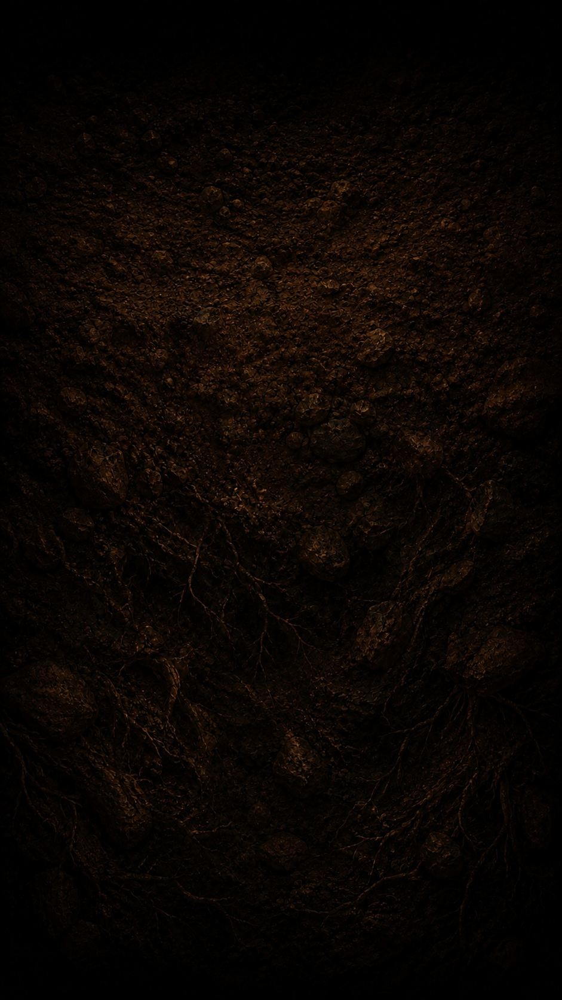
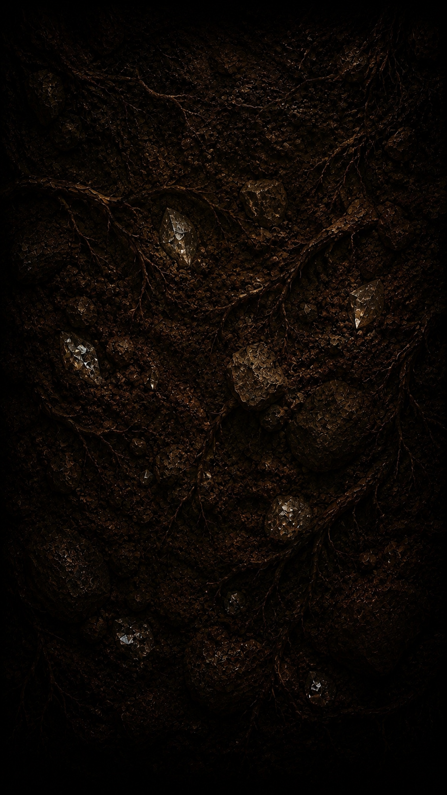

Browser first
Open the alpha from desktop or mobile browser without installing a separate client.
Brainrot Battles · Public alpha
Open the current build in your browser. The hub is live now while new areas, modes and progression are still being developed.
Current build
This page is for the game itself: what exists, what is being built and where to enter. No token pitch before the player even sees the game.
Open the alpha from desktop or mobile browser without installing a separate client.
The current public build starts in the shared hub that the rest of Brainrot Battles is growing from.
New areas, systems and playable content are being added as development continues.
From the build




The alpha is the starting point, not the finished game. The plan is to expand the world beyond the lobby with more places to enter and reasons to return.
The site will keep showing real builds and footage as they exist. When your gameplay trailer is ready, the homepage is already wired for assets/media/gameplay-trailer.mp4.
The game is connected to the BabyT character and community, but the first job of this page is still simple: show the game and let people play it.